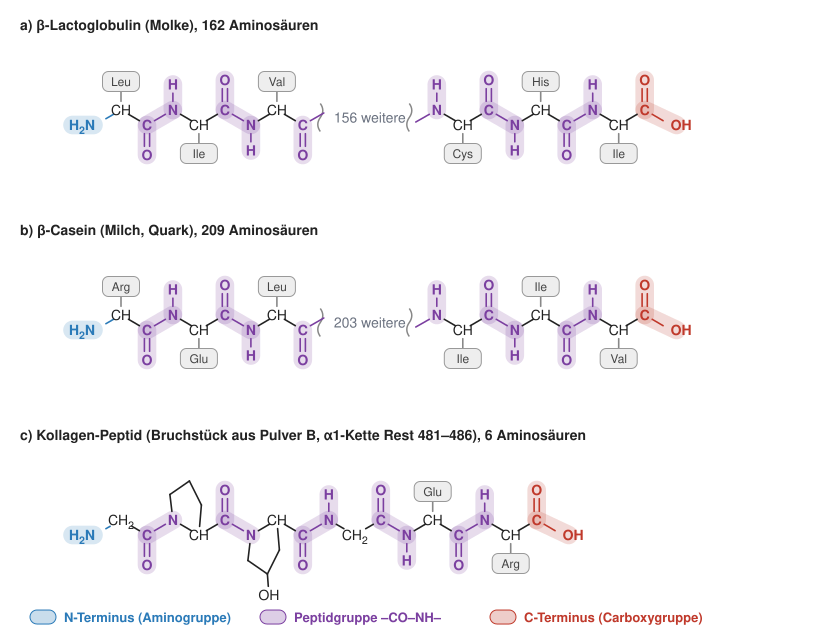

Einstieg
Was die Nachweise „sehen“: die Proteine Ihrer Proben in 3D
Die Proteine aus den Proben in M2 und M3. Ziehen dreht, Mausrad oder zwei Finger zoomen. Tippen Sie auf eine markierte Stelle: einen N-Terminus, ein Atom einer Peptidgruppe oder eine aromatische Seitenkette. Rechts steht dann, was sie ist und welcher Nachweis sie erfasst. H-Atome sind nicht gezeigt.
Aromaten: TyrTrpPhe O-Atome rot. Grün: Acetylgruppe (nur Ovalbumin). Weiß umrandet: die angetippte Gruppe.
Pulver A Molkenprotein
Milch ≈ 80 % Casein, ≈ 20 % Molkenprotein
Pulver B Kollagen-Peptide
Eiklar Positivprobe
| Zählung wird nach dem Laden erstellt … |
Gezählt im Modell. Lys = Lysin mit zweiter Aminogruppe in der Seitenkette. Beim Ovalbumin fehlen im Kristall zwei kurze Abschnitte; die Nummern sind im Modell fortlaufend.
Hilfekarten
Erst selbst probieren. Jede Karte deckt ihre Hilfe in Stufen auf, so wenig wie möglich, so viel wie nötig.
Hilfe zu 1a
Hilfe zu 1b
Hilfe zu 2b
Hilfe zu 2c
Hilfe zu 3b
Hilfe zu 3c
Hilfe zu 4a
Hilfe zu 4b
Vertiefungen
★ = vertiefend · ★★ = anspruchsvoll. Die Ergebnisse gehören in Ihre Unterlagen; die Abbildungen und Werkzeuge helfen beim Denken, sie ersetzen keine Lösung.
Der Melamin-Skandal: Stickstoff ist nicht gleich Protein
2008 mischten Händler in China Melamin (C3H6N6) in Milch und Säuglingsnahrung. Bei der üblichen Kontrolle wird der Stickstoffgehalt bestimmt und mit 6,25 multipliziert (Kjeldahl-Verfahren). So wird auch der Eiweißgehalt auf jedem Etikett berechnet (Verordnung (EU) Nr. 1169/2011, Anhang I). Rund 300 000 Kinder erkrankten an Nierensteinen, mindestens sechs starben (WHO 2008).
Wie viel Protein steckt in der Milch?
Ein Labor misst die Absorbanz A violetter Biuret-Lösungen bei 540 nm (Gornall et al., J. Biol. Chem. 177, 1949, 751). Kalibrierlösungen aus reinem Protein (Beispieldaten):
c in mg/mL: 0 · 2 · 4 · 6 · 8 · 10
A: 0,000 · 0,104 · 0,209 · 0,311 · 0,417 · 0,520
Milch, 1 : 10 verdünnt, ergibt A = 0,177.
Gelbe Finger
Laborpersonal, das mit konzentrierter Salpetersäure unvorsichtig ist, hat gelbe Fingerkuppen. Die Farbe lässt sich nicht abwaschen und verschwindet erst nach Tagen.
Glutenfrei: Wie weist man ein bestimmtes Protein nach?
Ein Lebensmittel darf in der EU „glutenfrei“ heißen, wenn es höchstens 20 mg Gluten je kg enthält (Durchführungsverordnung (EU) Nr. 828/2014). Labore nutzen dafür Antikörper, die nur an das Sequenzmotiv QQPFP binden, das in Gliadin häufig vorkommt (vgl. das 33-mer in Sitzung 13).
Anfang, Ende und Mitte: die Proteine aus M2 als Kette

Anfang und Ende der reifen Ketten von a) β-Lactoglobulin, dem Hauptprotein der Molke (Pulver A), und b) β-Casein aus der Milch, dazu c) ein Bruchstück aus Kollagen (α1-Kette, Rest 481–486), wie es in Kollagen-Peptiden (Pulver B) vorkommt (UniProt P02754, P02666, P02453). Seitenketten stehen als Kürzel im Kasten; Prolin (Pro) und Hydroxyprolin (Hyp) sind ausgeschrieben, weil ihr Ring das N-Atom der Kette einschließt.
Jede Kette hat genau einen N-Terminus mit freier Aminogruppe und einen C-Terminus mit freier Carboxygruppe, dazwischen liegen die Peptidgruppen –CO–NH–. Sequenzen schreibt man immer vom N- zum C-Terminus. Kollagen-Peptide entstehen, wenn Kollagen enzymatisch in viele kurze Stücke gespalten wird (Hydrolyse, Sitzung 08).
Fragen und Antworten
Warum heißt die Reaktion Biuret-Reaktion?
Biuret entsteht, wenn man Harnstoff erhitzt: Zwei Harnstoffmoleküle verbinden sich unter Abspaltung von Ammoniak. Biuret enthält zwei –CO–NH–Gruppen hintereinander, genau wie eine Peptidkette, und gibt deshalb mit Kupfer-Ionen in Natronlauge dieselbe violette Farbe. Biuret selbst ist kein Protein, der Nachweis ist nur nach ihm benannt.
Warum wird Glycin blau, aber nicht violett?
Auch Aminosäuren binden Kupfer-Ionen, und zwar über die Aminogruppe und die Carboxylatgruppe. Dieser Komplex ist blau. Für das Violett braucht es vier N-Atome aus Peptidgruppen, also mindestens zwei Peptidbindungen hintereinander.
Ist Kollagenpulver dann nutzlos?
Nein. Kollagen liefert viele Aminosäuren, vor allem Glycin und Prolin. Als einzige Proteinquelle reicht es nicht, weil Tryptophan fehlt, eine Aminosäure, die der Körper nicht selbst herstellen kann. In einer gemischten Ernährung kommt Tryptophan aus anderen Lebensmitteln. Ob Kollagenpulver darüber hinaus Haut oder Gelenke stärkt, ist eine andere Frage; dazu mehr in Sitzung 16.
Was wird bei der Xanthoprotein-Reaktion gelb?
Nur die Seitenketten mit einem aromatischen Ring, vor allem Tyrosin und Tryptophan. Salpetersäure ersetzt dort ein H-Atom durch eine Nitrogruppe –NO2. Die Peptidkette bleibt farblos. Deshalb hängt die Farbstärke davon ab, wie viele solche Seitenketten ein Protein hat.